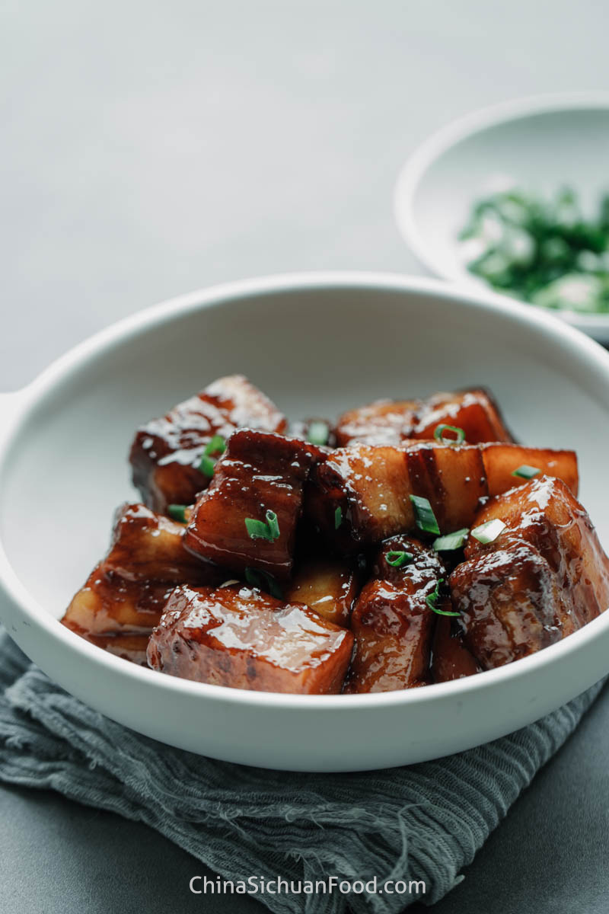

Red Braised Pork Belly Recipe

Ingredients:
- 500g Pork belly
- 2 tbsp Soy sauce
- 2 tbsp Dark soy sauce
- 1 tbsp Sugar
- 1 piece Star anise
- 1 tbsp Ginger
- 1 tbsp Shaoxing wine
- Water
Instructions:
- Boil pork belly, cut into pieces, and blanch for 3 minutes.
- Heat oil in a pan, stir-fry ginger, star anise, and sugar until it caramelizes.
- Add soy sauces and pork, stir to coat, and simmer for 45 minutes.
- Serve hot with steamed rice.